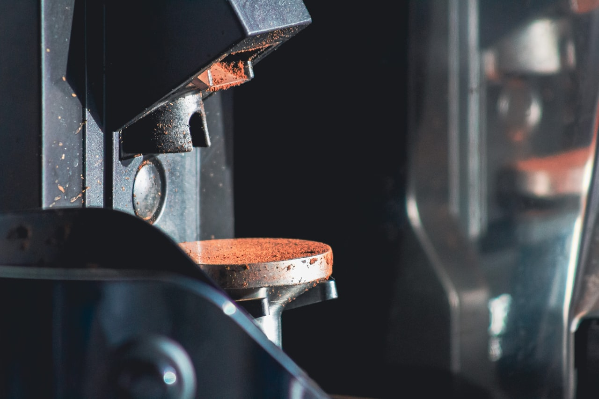

반복 하중 피로
인장·압축·굽힘 반복 하중으로 부품의 피로 수명(S-N)을 평가합니다.

OVERVIEW · 개요
부품·제품에 반복 하중과 진동을 가해 피로 수명과 내구성을 검증합니다. 목표 반복 수까지 무인으로 운전하며 파손·이상을 자동으로 감지합니다.
TEST · 시험 유형
인장·압축·굽힘 반복 하중으로 부품의 피로 수명(S-N)을 평가합니다.
힌지·버튼·커넥터 등 반복 동작 부품의 수명을 사이클 단위로 시험합니다.
진동·온도 등 환경 조건을 결합해 실사용에 가까운 내구성을 검증합니다.
FEATURES · 주요 특징
목표 반복 수까지 24시간 무인 운전하며 사이클을 카운트합니다.
하중 변화·변위 이상을 감지해 자동 정지·알림합니다.
반복 이력·하중·변위를 기록하고 수명 리포트를 생성합니다.
대상 부품 지그와 다채널 동시 시험 구성을 제공합니다.
SPECIFICATION · 상세 사양
| 항목 | 규격 |
|---|---|
| 시험 유형 | 반복 하중 피로 / 수명·개폐 / 진동 결합 |
| 하중 범위 | 0 ~ 50 kN (모델별) |
| 가진 주파수 | 1 ~ 30 Hz (조절 가능) |
| 반복 사이클 | 10⁶ 이상 · 목표값 설정 |
| 제어·기록 | PC 소프트웨어 · 사이클/하중/변위 이력 |
| 제공 범위 | 본체 · 지그 · 소프트웨어 · 설치/교정 |
PROCESS · 시험 절차
대상 부품·하중·목표 반복 수를 검토합니다.
가진 방식과 지그를 설계·제작합니다.
설치 후 하중·변위를 교정합니다.
수명 시험 후 데이터·리포트를 제공합니다.
FAQ · 자주 묻는 질문
CONTACT
대상 부품·하중 조건·목표 반복 수를 알려주시면 최적 시험기를 제안·회신드립니다.